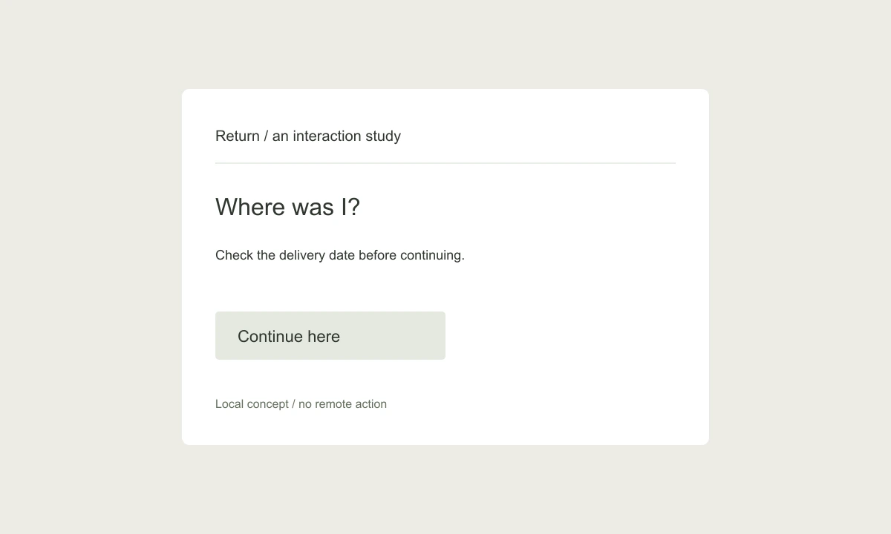

Return: A way back into interrupted work.
An interaction study about resuming a task without reconstructing the last ten minutes.

The question
A long form can be technically saved while still feeling lost. The fields remain, but the person no longer remembers which part was uncertain or what they planned to do next. Return explores a small marker for that moment of interruption.
The interaction
The interface lets someone leave a short return note attached to a section. It is not another task or reminder. When they reopen the document, the note appears with the relevant section and a direct Continue here action. The rest of the document remains available, but it does not compete for attention.
A detail that matters
The note is written in the first person: “Check the delivery date before continuing.” The wording preserves the reason for pausing. A generic Last edited label would preserve a timestamp but lose the intention. The control is close to the section heading so it can be found without searching a global menu.
Try the moment
A local demonstration of the confirmation language.
The tradeoff
A return note can become stale. The study clears the marker only when the person explicitly dismisses it, rather than assuming that opening the section means the question is resolved. In a real product, this behavior would need testing across several days of interrupted work.
What remains open
I would evaluate whether the marker helps people resume accurately, not whether it makes them finish faster. Some pauses are useful. A good interface should preserve the pause without turning it into a warning.